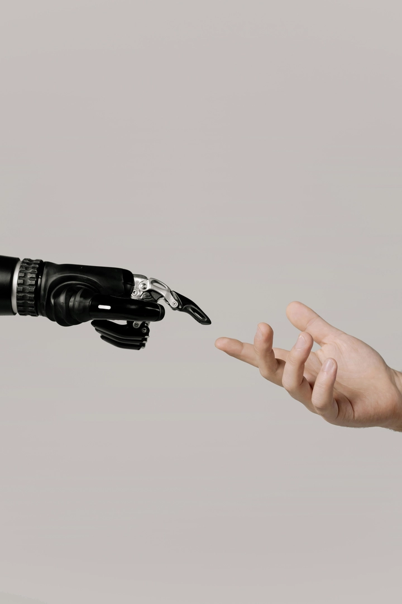

Top 10 ngành nghề sẽ bị ảnh hưởng bởi AI trong tương lai
Ngày nay, kỷ nguyên công nghệ số ngày càng phát triển mạnh hơn bao giờ hết, trí tuệ nhân tạo (AI) đang thay đổi cách chúng ta làm việc, học tập và giao tiếp. Từ những công việc lặp lại đến những lĩnh vực sáng tạo, AI đang dần mở rộng phạm vi ảnh hưởng của mình. Câu hỏi được đặt ra không còn là “AI có thay thế con người hay không?” mà là “Ngành nghề nào sẽ bị ảnh hưởng mạnh nhất — và chúng ta cần thích ứng ra sao?”.
Đây cũng là những vấn đề mà các bạn trẻ đặc biệt quan tâm để lựa chọn nghề nghiệp trong tương lai. Dưới đây là 10 ngành nghề được dự đoán sẽ chịu tác động sâu sắc từ AI trong thập kỷ tới được trithucWorld đánh giá và tổng hợp:
1. Ngành sản xuất và công nghiệp tự động
Trong suốt thế kỷ 20, các dây chuyền sản xuất công nghiệp đã gắn liền với hình ảnh của hàng trăm công nhân làm việc bên những cỗ máy cơ học. Nhưng bước sang kỷ nguyên trí tuệ nhân tạo, nhà máy truyền thống đang dần nhường chỗ cho những “nhà máy thông minh” – nơi robot, cảm biến, và hệ thống AI phối hợp với nhau gần như không cần sự can thiệp của con người.
Sự phát triển của AI trong sản xuất giúp máy móc không chỉ thực hiện các thao tác lặp lại, mà còn tự học và tối ưu hóa quy trình. Ví dụ, các robot hiện đại có thể tự phát hiện lỗi sản phẩm thông qua thị giác máy tính, điều chỉnh cánh tay robot theo sai số thực tế, hoặc dự đoán khi nào thiết bị cần được bảo trì để tránh hỏng hóc.
Trong lĩnh vực sản xuất linh kiện điện tử, ô tô, hay dược phẩm, AI còn đảm nhiệm vai trò giám sát chất lượng, điều phối chuỗi cung ứng, thậm chí quản lý kho hàng dựa trên dữ liệu thời gian thực. Các hệ thống phân tích dữ liệu lớn (Big Data) giúp doanh nghiệp giảm chi phí, tăng năng suất và duy trì chất lượng ổn định hơn bao giờ hết.
Tuy nhiên, sự tự động hóa này cũng kéo theo làn sóng thay đổi lớn trong cơ cấu lao động. Những vị trí như công nhân dây chuyền, nhân viên đóng gói, hoặc kỹ thuật viên kiểm tra sản phẩm sẽ bị thu hẹp mạnh do AI có thể thay thế hầu hết các tác vụ lặp lại với độ chính xác cao hơn. Ngược lại, nhu cầu đối với kỹ sư robot, chuyên gia dữ liệu công nghiệp, kỹ sư bảo trì hệ thống AI sẽ tăng lên rõ rệt.
Có thể nói, ngành sản xuất đang chuyển mình từ “lao động tay chân” sang “lao động tri thức kỹ thuật”. Người lao động trong tương lai không chỉ cần biết vận hành máy, mà còn phải hiểu cách máy học, cách dữ liệu vận hành, và cách AI ra quyết định.
Nếu như thế kỷ trước, kỹ năng cơ khí là nền tảng, thì thế kỷ 21 đòi hỏi sự kết hợp giữa kỹ thuật số, lập trình, và phân tích dữ liệu. Những ai sớm thích ứng với xu hướng này sẽ là người dẫn đầu trong thời đại công nghiệp 4.0.
2. Ngành vận tải và logistics
Công nghệ trí tuệ nhân tạo đang tạo nên một cuộc cách mạng thầm lặng trong lĩnh vực vận tải và logistics – ngành vốn được xem là “xương sống” của thương mại toàn cầu. Những tiến bộ về xe tự lái, drone giao hàng, bản đồ số và phân tích dữ liệu lớn đang khiến cách vận chuyển hàng hóa, lưu kho và giao nhận thay đổi nhanh chóng.
Trong tương lai không xa, xe tải tự hành có thể di chuyển trên các tuyến cao tốc xuyên quốc gia mà không cần tài xế. Các công ty logistics sử dụng AI để phân tích lưu lượng giao thông, dự đoán nhu cầu vận chuyển và tối ưu tuyến đường sao cho tiết kiệm nhiên liệu nhất. Ngay trong kho hàng, robot vận chuyển tự động đã có thể phân loại, sắp xếp và đóng gói sản phẩm nhanh gấp nhiều lần con người, đồng thời hạn chế sai sót.
Điều này mang lại hiệu quả kinh tế lớn: giảm chi phí nhân công, rút ngắn thời gian giao hàng và tăng độ chính xác. Tuy nhiên, cũng chính vì hiệu quả ấy mà một bộ phận lớn lao động truyền thống trong ngành đang đứng trước nguy cơ mất việc. Nhân viên giao hàng, lái xe đường dài, nhân công bốc xếp hay nhân viên quản lý kho đều là những vị trí có khả năng bị tự động hóa cao.
Song song với đó, sự phát triển của AI lại mở ra nhu cầu mới cho các chuyên viên vận hành hệ thống tự động, kỹ sư dữ liệu logistics và nhà phân tích chuỗi cung ứng thông minh. Công việc trong ngành không biến mất hoàn toàn, mà đang chuyển từ “sức lao động tay chân” sang “lao động quản lý dữ liệu và công nghệ”.
Tương lai của logistics không còn chỉ nằm ở việc “vận chuyển nhanh hơn”, mà ở việc “vận chuyển thông minh hơn” – nơi con người và AI cùng hợp tác để tạo nên chuỗi cung ứng hiệu quả, linh hoạt và bền vững hơn.
3. Ngành hành chính – văn phòng
Nếu như trong thế kỷ trước, nhân viên hành chính được xem là mắt xích không thể thiếu trong mọi tổ chức – đảm nhiệm việc lưu trữ hồ sơ, sắp xếp lịch họp, nhập dữ liệu hay chuẩn bị báo cáo – thì trong thời đại AI, phần lớn những công việc này đang dần được tự động hóa bởi phần mềm thông minh và trợ lý ảo.
Ngày nay, các hệ thống như ChatGPT, Microsoft Copilot hay Google Duet AI đã có thể soạn thảo văn bản, trả lời email, lập kế hoạch công việc, thậm chí ghi biên bản cuộc họp bằng giọng nói. Một trợ lý AI có thể làm việc 24/7, không mắc lỗi chính tả, không quên lịch và có thể học hỏi từ thói quen của người dùng để tối ưu hiệu suất.
Điều đó khiến vai trò của nhân viên hành chính truyền thống dần thu hẹp. Các công việc mang tính lặp lại, không đòi hỏi tư duy sáng tạo – như nhập liệu, tổng hợp báo cáo, hay gửi thư mời họp – đang được AI thực hiện nhanh chóng và chính xác hơn con người.
Tuy nhiên, điều đó không có nghĩa ngành hành chính sẽ biến mất. Ngược lại, nó đang chuyển hóa sang hướng quản trị kỹ thuật số, nơi con người đảm nhiệm các vai trò như quản lý quy trình tự động, kiểm soát dữ liệu, và hỗ trợ ra quyết định chiến lược. Nhân sự hành chính trong tương lai cần có kiến thức về công cụ AI, bảo mật thông tin và quản trị dữ liệu nội bộ, thay vì chỉ thao tác hành chính thuần túy.
Thay vì “làm thay máy”, con người sẽ “làm việc cùng máy”. Sự thay đổi này đòi hỏi một tư duy hoàn toàn mới trong quản trị văn phòng – nơi giá trị con người không còn nằm ở việc ghi chép hay sắp xếp, mà ở khả năng phân tích, kết nối và điều phối giữa con người và hệ thống AI.

4. Ngành kế toán – kiểm toán
Kế toán từng là biểu tượng của sự chính xác và tỉ mỉ trong thế giới tài chính. Nhưng với sự xuất hiện của trí tuệ nhân tạo, những bảng tính phức tạp, chứng từ dày đặc và quy trình kiểm tra chéo số liệu giờ đây có thể được xử lý tự động với tốc độ và độ chính xác vượt trội.
Các phần mềm kế toán thông minh được tích hợp AI có thể tự động ghi nhận giao dịch, đối chiếu số liệu và phát hiện bất thường mà không cần sự can thiệp thủ công. Nhiều doanh nghiệp hiện nay đã sử dụng hệ thống phân tích dữ liệu tài chính theo thời gian thực, giúp ban lãnh đạo nắm bắt tình hình và ra quyết định nhanh chóng hơn.
Điều này khiến công việc của kế toán viên nhập liệu hoặc kiểm toán viên sơ cấp dần mất đi ý nghĩa truyền thống. Thay vì tập trung vào việc “ghi chép”, kế toán hiện đại sẽ chuyển hướng sang phân tích dữ liệu, tư vấn chiến lược và kiểm soát rủi ro tài chính.
Tuy nhiên, AI không thể thay thế hoàn toàn con người trong lĩnh vực này. Các yếu tố như đạo đức nghề nghiệp, phán đoán tình huống và hiểu biết về quy định pháp lý vẫn là những mảng đòi hỏi trí tuệ con người. Người làm kế toán – kiểm toán trong tương lai sẽ cần phát triển kỹ năng công nghệ, tư duy phân tích và khả năng ra quyết định dựa trên dữ liệu.
5. Ngành ngân hàng và bảo hiểm
Sự chuyển đổi số đang định hình lại toàn bộ ngành tài chính – ngân hàng. Từ việc mở tài khoản, phê duyệt tín dụng đến chăm sóc khách hàng, hầu hết các quy trình truyền thống đều có thể được thực hiện bởi AI và hệ thống tự động hóa.
AI hiện có thể phân tích lịch sử giao dịch, đánh giá rủi ro tín dụng, phát hiện gian lận, và gợi ý sản phẩm phù hợp cho từng khách hàng. Chatbot thông minh thay thế giao dịch viên, cung cấp dịch vụ 24/7 mà không cần nghỉ ngơi. Các công ty bảo hiểm cũng sử dụng AI để xử lý hồ sơ bồi thường, dự đoán rủi ro tai nạn hoặc sức khỏe, giúp giảm thời gian xử lý và chi phí vận hành.
Tuy nhiên, mặt trái là nhiều vị trí tác nghiệp như nhân viên giao dịch, tư vấn viên, hoặc nhân viên thẩm định hồ sơ đang dần bị thu hẹp. Trong khi đó, các vị trí mới như chuyên gia dữ liệu tài chính, kỹ sư bảo mật, nhà thiết kế thuật toán rủi ro lại trở thành xu hướng.
AI mang đến hiệu quả và tiện lợi, nhưng cũng đặt ra thách thức lớn về bảo mật dữ liệu, minh bạch và trách nhiệm đạo đức. Ngành ngân hàng trong tương lai sẽ không chỉ là nơi giao dịch tiền tệ, mà là một hệ sinh thái thông minh – nơi con người và máy cùng hợp tác để tạo lòng tin và giá trị bền vững.
6. Ngành báo chí – truyền thông
Khi trí tuệ nhân tạo có thể viết bài, đọc tin và tạo hình ảnh, ngành báo chí – truyền thông đang đứng trước bước ngoặt lịch sử. Hàng loạt tòa soạn trên thế giới đã thử nghiệm AI để tự động viết tin ngắn, biên tập nội dung thể thao, hoặc tổng hợp tin tức thời gian thực. Một số hệ thống thậm chí có thể tạo giọng đọc tự nhiên, giúp sản xuất video hoặc podcast mà không cần người dẫn chương trình.
AI mang lại năng suất khổng lồ: nó có thể xử lý hàng nghìn nguồn dữ liệu, tổng hợp thông tin chỉ trong vài giây. Tuy nhiên, điều đáng lo là độ tin cậy và chiều sâu nội dung. Một bài báo được AI viết có thể chính xác về dữ kiện, nhưng thiếu cảm xúc, bối cảnh và góc nhìn nhân văn – thứ làm nên giá trị của nghề báo.
Do đó, những nhà báo, biên tập viên và chuyên gia truyền thông trong tương lai sẽ không bị thay thế hoàn toàn, mà sẽ chuyển vai trò từ “người đưa tin” sang “người xác thực và phân tích”. Sứ mệnh của báo chí sẽ là kết hợp sức mạnh dữ liệu của AI với tư duy phản biện của con người, để truyền tải thông tin vừa nhanh, vừa đáng tin cậy.
7. Ngành giáo dục – đào tạo
Trong giáo dục, trí tuệ nhân tạo không chỉ thay đổi phương pháp dạy học, mà còn cá nhân hóa toàn bộ quá trình học tập. Các nền tảng học trực tuyến hiện nay có thể theo dõi tiến độ học, phân tích điểm mạnh – yếu của học viên, từ đó tự động điều chỉnh nội dung sao cho phù hợp nhất với từng người.
AI cũng hỗ trợ giáo viên bằng cách tạo bài kiểm tra, chấm điểm tự động và cung cấp phản hồi chi tiết. Với khả năng dịch ngôn ngữ, mô phỏng giọng nói và hình ảnh ảo, AI giúp việc học trở nên sinh động và dễ tiếp cận hơn bao giờ hết.
Tuy nhiên, vai trò của người thầy không vì thế mà mất đi. Giáo dục không chỉ là truyền đạt kiến thức, mà còn là truyền cảm hứng, hướng dẫn tư duy và hình thành nhân cách – những điều mà AI chưa thể làm được.
Giáo viên tương lai sẽ cần kết hợp công nghệ và kỹ năng sư phạm, trở thành người hướng dẫn trong một lớp học “lai” giữa con người và máy. Giá trị của giáo dục không nằm ở việc thay thế thầy cô, mà ở chỗ giúp họ tập trung vào những khía cạnh sáng tạo và nhân văn của việc dạy học.
8. Ngành y tế – chăm sóc sức khỏe
AI đang chứng minh khả năng vượt trội trong việc phân tích hình ảnh y khoa, dự đoán bệnh lý và hỗ trợ chẩn đoán. Những hệ thống học sâu có thể phát hiện ung thư sớm, phân tích kết quả xét nghiệm hoặc theo dõi dấu hiệu bất thường từ thiết bị đeo tay của bệnh nhân.
Trong lĩnh vực nghiên cứu, AI giúp tăng tốc quá trình phát hiện thuốc mới, mô phỏng phản ứng sinh học và tối ưu thử nghiệm lâm sàng. Điều này mở ra cơ hội cứu sống hàng triệu người.
Tuy nhiên, các vị trí như kỹ thuật viên xét nghiệm, nhân viên nhập liệu y tế hoặc chuyên viên hành chính bệnh viện có thể bị giảm nhu cầu đáng kể do hệ thống tự động hóa đảm nhận. Dù vậy, AI vẫn chỉ là công cụ hỗ trợ, không thể thay thế hoàn toàn sự đồng cảm, phán đoán và đạo đức nghề nghiệp của đội ngũ y bác sĩ.
Y học trong tương lai sẽ là sự kết hợp giữa trí tuệ nhân tạo và trí tuệ cảm xúc của con người, nơi công nghệ giúp bác sĩ hiểu bệnh nhân hơn – chứ không làm mất đi bản chất nhân văn của ngành y.

9. Ngành sáng tạo – thiết kế – nghệ thuật
Nếu trước đây nghệ thuật được xem là vùng đất bất khả xâm phạm của con người, thì giờ đây AI đã bước vào với tốc độ đáng kinh ngạc. Các công cụ như Midjourney, DALL·E, Runway hay Suno AI có thể tạo ra hình ảnh, âm nhạc, video hoặc thiết kế đồ họa chỉ trong vài giây – điều mà trước đây cần hàng giờ làm việc sáng tạo.
Điều này đặt ra câu hỏi: “Liệu AI có thể thay thế nghệ sĩ?”
Câu trả lời là – không hoàn toàn. Bởi sáng tạo không chỉ là kỹ năng, mà là cảm xúc, trải nghiệm và tư duy thẩm mỹ. Tuy nhiên, AI chắc chắn sẽ thay đổi cách người làm sáng tạo làm việc: từ việc phác thảo ý tưởng, thử nghiệm phong cách, cho đến sản xuất sản phẩm cuối cùng.
Những công việc lặp lại như thiết kế banner, chỉnh sửa ảnh, dựng clip ngắn sẽ dần được AI đảm nhận, trong khi nhà thiết kế con người sẽ tập trung vào ý tưởng và phong cách độc bản. Tương lai của nghệ thuật sẽ không phải là “AI thay thế nghệ sĩ”, mà là AI trở thành công cụ đồng sáng tạo, mở ra một kỷ nguyên mới của trí tưởng tượng.
10. Ngành pháp lý – tư vấn luật
Ngành luật vốn gắn liền với khối lượng tài liệu khổng lồ – hồ sơ vụ án, hợp đồng, điều khoản và quy định. Với khả năng xử lý ngôn ngữ tự nhiên, AI giờ đây có thể đọc, tóm tắt và phân tích hàng nghìn trang tài liệu pháp lý trong thời gian ngắn, phát hiện điểm tương đồng giữa các vụ án hoặc gợi ý lập luận pháp lý cho luật sư.
Nhiều công ty luật quốc tế đã ứng dụng AI trong soạn thảo hợp đồng, nghiên cứu án lệ và hỗ trợ chuẩn bị hồ sơ tranh tụng. Nhờ vậy, họ tiết kiệm thời gian, giảm chi phí và tăng độ chính xác trong xử lý vụ việc.
Tuy nhiên, điều này cũng đồng nghĩa rằng các vị trí trợ lý pháp lý, nhân viên nghiên cứu hồ sơ hoặc luật sư mới ra trường có thể bị ảnh hưởng. Dù vậy, AI không thể thay thế khả năng biện luận, cảm nhận công lý và đạo đức nghề nghiệp của con người.
Người làm luật trong tương lai sẽ phải hiểu cách AI hoạt động, biết cách khai thác công cụ số để nâng cao hiệu quả công việc, đồng thời vẫn giữ vững vai trò của “người bảo vệ lẽ phải” trong xã hội.
Kết luận
AI đang viết lại bản đồ nghề nghiệp toàn cầu. Nó có thể tự học, tự tối ưu và tự ra quyết định – nhưng vẫn cần con người để định hướng, giám sát và duy trì giá trị đạo đức.
Thay vì lo sợ bị thay thế, chúng ta cần chuyển đổi kỹ năng, học cách cộng tác với AI và khai thác nó như một công cụ mở rộng năng lực. Trong tương lai, những ai hiểu AI, làm chủ công nghệ và vẫn giữ được tư duy sáng tạo, nhân văn – sẽ là người dẫn đầu trong kỷ nguyên mới.